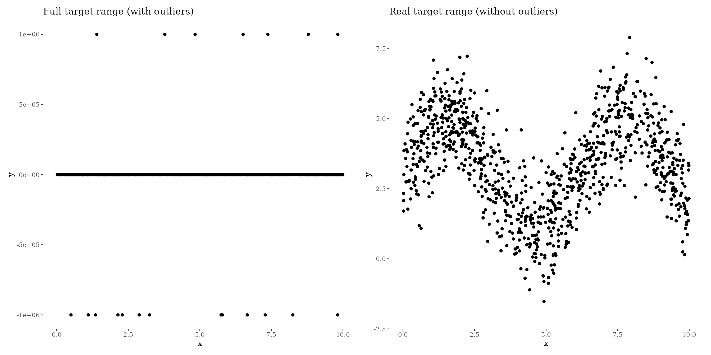
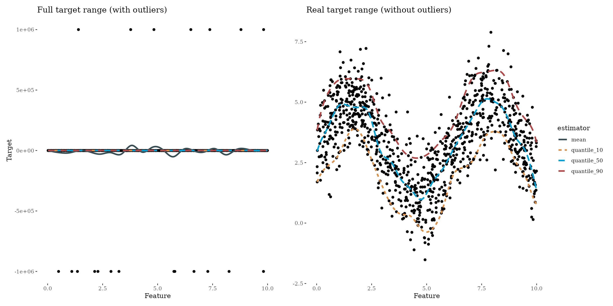

robust_regression.RmdBoosting quantiles is just controlled by the loss function. Quantile regression was originally motivated for general additive/linear models (see here). We can use that theory to define the following loss function:
\[ L(y, f(x)) = h|y - f(x)| \] with \[ h = \left\{ \begin{array}{ccc} 2q & \ \ \text{if} \ \ & y - f(x) > 0 \\ 2(1 - q) & \ \ \text{if} \ \ & \text{otherwise} \end{array} \right. \] where \(q\) corresponds to the quantile we like to boost. Visualizing the loss, depending on the residuals \(y - f(x)\), shows that, for example, boosting the 90 % quantile punishes residuals greater than zero much more than residuals smaller than zeros which leads to an optimization of the 90 % quantile:
To show the effect of quantile/robust regression we simulate data that follows a sinus curve with 20 outliers:
nsim = 1000
noutlier = 20
outlier_mean = 1e6
x = runif(nsim, 0, 10)
y = 3 + 2 * sin(x) + rnorm(nsim, 0, 1)
outlier_idx = sample(nsim, noutlier)
y[outlier_idx] = sample(x = c(-1, 1), size = noutlier, replace = TRUE) * rnorm(noutlier, outlier_mean, 1)
df = data.frame(x = x, y = y)#> Warning: Removed 20 rows containing missing values (geom_point).
All you need to do is to use the LossQuantile class generator. For example, to boost the median (50 % quantile) pass 0.5 to the constructor:
loss_quantile50 = LossQuantile$new(0.5)
loss_quantile50
#>
#> LossQuantile Loss:
#>
#> Loss function: L(y,x) = h|y - f(x)|
#>
#> h = 2q if y - f(x) > 0
#> h = 2(1 - q) otherwise
#>
#> with quantile q = 0.5A little side note: Boosting the median or the 50 % quantile is equivalent to conduct boosting with the absolute loss.
The loss_quantile90 loss object can now be used to define and train a new Compboost object:
cboost_quantile50 = boostSplines(data = df, target = "y", loss = loss_quantile50, iterations = 1000L, trace = 200L)
#> 1/1000 risk = 2e+04 time = 0
#> 200/1000 risk = 2e+04 time = 15983
#> 400/1000 risk = 2e+04 time = 35213
#> 600/1000 risk = 2e+04 time = 54346
#> 800/1000 risk = 2e+04 time = 74901
#> 1000/1000 risk = 2e+04 time = 100130
#>
#>
#> Train 1000 iterations in 0 Seconds.
#> Final risk based on the train set: 2e+04Using the absolute loss to boost the median is also known as robust regression since outliers do not get as much weight as using the quadratic loss. To visualize the effect of outliers on the regression we do also train a model using the QuadraticLoss:
cboost_mean = boostSplines(data = df, target = "y", loss = LossQuadratic$new(), iterations = 1000L, trace = 0)
#> Train 1000 iterations in 0 Seconds.
#> Final risk based on the train set: 9.7e+09
df_plot = data.frame(
feature = rep(x, times = 2),
preds = c(cboost_mean$predict(), cboost_quantile50$predict()),
estimator = rep(c("mean", "median"), each = length(x))
)
gg1 = ggplot() +
geom_point(data = df, aes(x = x, y = y), show.legend = FALSE) +
geom_line(data = df_plot, aes(x = feature, y = preds, color = estimator), size = 2) +
ggtitle("Full target range (with outliers)") +
ggthemes::theme_tufte()
gg2 = ggplot() +
geom_point(data = df, aes(x = x, y = y), show.legend = FALSE) +
geom_line(data = df_plot, aes(x = feature, y = preds, color = estimator), size = 2) +
ggtitle("Real target range (without outliers)") +
ylim(-2, 8) +
ggthemes::theme_tufte()
gridExtra::grid.arrange(gg1, gg2, ncol = 2)
#> Warning: Removed 20 rows containing missing values (geom_point).
#> Warning: Removed 1000 row(s) containing missing values (geom_path).It is clear to see that boosting with the quadratic loss is quite sensitive against outliers. Of course, this example is very exaggerated to show the effect of boosting the median.
Instead of boosting the median we can boost every quantile we like. In this example we are additionally boosting the 10 % and 90 % quantile to get “some kind of confidence interval”. Be careful with using the term confidence interval here since all predictions are estimated independent from each other which may tighten the boundaries:
cboost = boostSplines(data = df, target = "y", loss = LossQuadratic$new(), iterations = 1000, trace = 0)
#> Train 1000 iterations in 0 Seconds.
#> Final risk based on the train set: 9.7e+09
cboost_10 = boostSplines(data = df, target = "y", loss = LossQuantile$new(0.1), iterations = 1000, trace = 0)
#> Train 1000 iterations in 0 Seconds.
#> Final risk based on the train set: 2.8e+04
cboost_50 = boostSplines(data = df, target = "y", loss = LossQuantile$new(0.5), iterations = 1000, trace = 0)
#> Train 1000 iterations in 0 Seconds.
#> Final risk based on the train set: 2e+04
cboost_90 = boostSplines(data = df, target = "y", loss = LossQuantile$new(0.9), iterations = 1000, trace = 0)
#> Train 1000 iterations in 0 Seconds.
#> Final risk based on the train set: 1.2e+04
df_pred = data.frame(
feat = x,
target = y,
mean = cboost$predict(),
quantile_10 = cboost_10$predict(),
quantile_50 = cboost_50$predict(),
quantile_90 = cboost_90$predict()
)
df_pred = tidyr::gather(data = df_pred, key = "estimator", value = "pred", mean:quantile_90)
gg1 = ggplot() +
geom_point(data = df_pred, aes(x = feat, y = target)) +
geom_line(data = df_pred, aes(x = feat, y = pred, color = estimator, linetype = estimator), size = 2, show.legend = FALSE) +
xlab("Feature") +
ylab("Target") +
ggthemes::theme_tufte() +
scale_color_brewer(palette = "Set1") +
ggtitle("Full target range (with outliers)")
gg2 = ggplot() +
geom_point(data = df_pred, aes(x = feat, y = target)) +
geom_line(data = df_pred, aes(x = feat, y = pred, color = estimator, linetype = estimator), size = 2) +
ylim(-2, 8) +
xlab("Feature") +
ylab("") +
ggthemes::theme_tufte() +
scale_color_brewer(palette = "Set1") +
ggtitle("Real target range (without outliers)")
gridExtra::grid.arrange(gg1, gg2, ncol = 2)
#> Warning: Removed 80 rows containing missing values (geom_point).
#> Warning: Removed 1000 row(s) containing missing values (geom_path).
Comments
Boosting the median is a technique to get a more robust model. Nevertheless, since boosting the mean has some nice estimation properties we introduce more variance in the estimators if we use the quantile loss. To get as precise predictions we need much more data to reduce the variance. Another better loss in terms of variance is the Huber loss
LossHuber$new()which uses a quadratic approximation at around zero and after a threshold \(\delta\) a linear extrapolation.